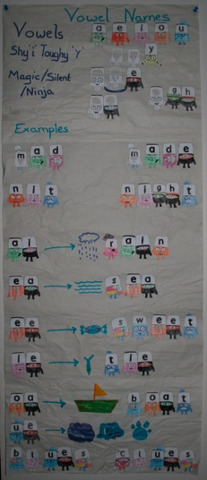

My lesson plan
Lesson Sound a
Example words as, pat, tap
DVD episode Jolly Phonics 1 (s a t p i n)
Computer time http://www.starfall.com/n/level-k/letter-a/load.htm and http://www.starfall.com/n/level-k/song-sa/load.htm
Lesson Sound t
Slowly allow your learner to say the letter sounds and start blending to make the word.
Example words sat, sit, tap
DVD episode BBC Phonics 1 (s a t p i n)
Computer time http://www.starfall.com/n/level-k/letter-t/load.htm
Lesson Sound p
Example words pat, tap, pan
DVD episode Jolly Phonics 1 (s a t p i n)
Computer time http://www.bbc.co.uk/cbeebies/alphablocks/#/lb/alphablocks/alphablocksgames 1 a-z alphablocks (letter sounds) and http://www.starfall.com/n/level-k/letter-p/load.htm
Lesson Sound i
Example words pit, tin, nip
DVD episode BBC Phonics 1 (s a t p i n)
Computer time http://www.starfall.com/n/level-k/letter-i/load.htm and http://www.starfall.com/n/level-k/song-si/load.htm
Lesson Sound n
Example words ant, pan, pin
DVD episode Jolly Phonics 1 (s a t p i n)
Computer time http://www.bbc.co.uk/cbeebies/alphablocks/#/lb/alphablocks/alphablocksgames 1 a-z alphablocks (letter sounds) and http://www.starfall.com/n/level-k/letter-n/load.htm
Lesson Sound m
Show flash cards from word list 1 and appropriate words from list 2 (eg the ones with 'm' in).
Example words imp, man, mat
DVD episode BBC Phonics 2 (m d g o c k)
Computer time http://www.starfall.com/n/level-k/letter-m/load.htm
Lesson Sound d
Every day add the next few from words from the latest word list. (For this lesson it will be 'd')
Example words sad, dip, mad
DVD episode BBC Reading 1 (s a t p i n m d)
Computer time http://www.bbc.co.uk/cbeebies/alphablocks/#/lb/alphablocks/alphablocksgames 7 * mic (band) and http://www.starfall.com/n/level-k/letter-d/load.htm
Lesson Sound g
DVD episode BBC Phonics 2 (m d g o c k)
Computer time http://www.bbc.co.uk/cbeebies/alphablocks/#/lb/alphablocks/alphablocksgames 3 * mountain (b i g)
Example words pig, gas, gap
Lesson Sound o
If a word has been sounded out and blended correctly by the learner (reading by sight is not the idea with this game) remove it from the 20 loose flash card words in the box to an elastic band bundle. Try not to have more than 20 words loose in the box. Make up the 20 loose words with the daily new words and then from the correct old words in the elastic band. If no words have been returned to the old words elastic band or more than 20 are loose in the box, then repeat the lesson which is causing the most problems. If more than 6 words are to be taken from the old words elastic band pile, take 5 new words from the extra words list. (For 12 correct take 10 new words). The extra word list is there to give the learner confidence (the number only corresponds to the word list for information not when to use it). I believe in bribery and corruption during holidays, so for every word returned to the correct old words elastic band my daughter got a small sweet.
DVD episode BBC Phonics 2 (m d g o c k)
Computer time http://www.bbc.co.uk/cbeebies/alphablocks/#/lb/alphablocks/alphablocksgames 19 * bus (s t o p)
Example words top, got, not
Lesson Sound c
DVD episode Jolly Phonics 2 (c k e h r m d)
Example words can, cot, cap
Lesson Sound k
Just a note k is used instead of c as it is followed by either an e or i.
DVD episode BBC Phonics 1,2,3 (s a t p i n m d g o c k e u r)
Example words kid, kit, skin
Lesson Sound Double Sounds
Explain when two same sound consonants sit together only the first make a sound. ll, ss, ck
DVD episode Jolly Phonics 2 (c k e h r m d)
Computer time http://www.bbc.co.uk/cbeebies/alphablocks/#/lb/alphablocks/alphablocksgames 11 * key (c k ck)
Example words pack, kiss, mass
Lesson Sound e
DVD episode BBC Phonics 3 (e u r)
Example words pet, egg, den
Lesson Sound u
DVD episode Jolly Phonics 3 (g o u l f b)
Example words nut, tug, gun
Lesson Sound r
DVD episode BBC Reading 2 (g o c k e u r)
Computer time http://www.bbc.co.uk/cbeebies/alphablocks/#/lb/alphablocks/alphablocksgames 23 sack ( r )
Example words ram, red, ri
Lesson Sound h
DVD episode BBC Phonics 4 (h b f)
Example words ham, hen, his
Lesson Sound b
DVD episode Jolly Phonics 3 (g o u l f b)
Computer time http://www.bbc.co.uk/cbeebies/alphablocks/#/lb/alphablocks/alphablocksgames 9 * drum (din/fab)
Example words bat, tub, bin
Lesson Sound f
DVD episode BBC Phonics 4 (h b f)
Example words fed, fat, fit
Lesson Sound l
DVD episode BBC Phonics 5 (l j v)
Example words lad, leg, log
Lesson Sound j
DVD episode Jolly Phonics 5 (ai j oa ie ee or)
Computer time http://www.bbc.co.uk/cbeebies/alphablocks/#/lb/alphablocks/alphablocksgames 25 jay bird (j)
Example words jam, jog, jet
Lesson Sound v
DVD episode BBC Phonics 5 (l j v)
Computer time http://www.bbc.co.uk/cbeebies/alphablocks/#/lb/alphablocks/alphablocksgames 8 finish line (v + words)
Example words vet, van,
Lesson Sound w
DVD episode Jolly Phonics 6 (z w ng v oo oo)
Example words wet, wig, win
Lesson Sound x
DVD episode BBC Phonics 6 (w x y z qu)
Computer time http://www.bbc.co.uk/cbeebies/alphablocks/#/lb/alphablocks/alphablocksgames 5 * balloon (x)
Example words wax, six, fox
Lesson Sound y
DVD episode BBC Phonics 6 (w x y z qu)
Example words yap, yes, yet
Lesson Sound z
DVD episode Jolly Phonics 6 (z w ng v oo oo)
Example words zip, buzz, zebra
Lesson Sound qu
Explain 'q' never appears in a word without 'u'.
DVD episode BBC Reading 3 (h b f l j v w x y z qu)
Computer time http://www.bbc.co.uk/cbeebies/alphablocks/#/lb/alphablocks/alphablocksgames 18 little alpha block (qu)
Example words quick, quin queen
Lesson Capitals
Explain every letter has a little letter and a big letter
DVD episode Jolly Phonics 4 (Rhyme & Capitals)
Computer time http://www.abcya.com/alphabet_match_K1_1.htm
Example words Mum, Dad, Gran
Lesson Recap
Spend a week learning capitals and reading books
Computer time http://www.bbc.co.uk/cbeebies/alphablocks/#/lb/alphablocks/alphablocksgames 12 lazy dog (sentence)
Lesson Sound ng
Explain sometimes two letters together make a different Sound
DVD episode BBC Phonics 7 (ch sh th ng)
Example words bang, ring, song
Lesson about h
'h' following a consonant makes a different different sound. ch, sh, th and gh
Computer time http://www.bbc.co.uk/cbeebies/alphablocks/#/lb/alphablocks/alphablocksgames 10 feet (ch, sh, th)
Lesson Sound ch
DVD episode Jolly Phonics 7 (y x ch sh th th)
Example words chin, rich, chat
Lesson Sound sh
DVD episode BBC Phonics 7 (ch sh th ng)
Example words fish, shop, wish
Lesson Sound 'th' beginning
Remind the learner to be rude and stick out their tongue.
DVD episode Jolly Phonics 7 (y x ch sh th th)
Computer time http://www.bbc.co.uk/cbeebies/alphablocks/#/lb/alphablocks/alphablocksgames 10 feet (ch, sh, th)
Example words this, them, then
Lesson Sound 'th' end
DVD episode BBC Phonics 7 (ch sh th ng)
Example words with, moth, cloth
Lesson Letter Names
Go though the alphabet (random order or backwards so there is no chance of singing showing the letter and saying the name and sound). This is to stop the learner learning parrot fashion.
DVD episode Jolly Phonics 4 (Rhyme & Capitals)
Lesson Recap
DVD episode Jolly Phonics 4 (Rhyme & Capitals)
Spend a week learning names and reading books
DVD episode BBC Reading 4 (ch sh th ng)

Lesson Sound Vowel Names
As before but just 'a', 'e', 'i', 'o' and 'u' . Explain they are vowels and they occasionally say their name in words. I did it by making a poster - I hope you like it, - the letters are the Alphablocks.
Computer time http://www.bbc.co.uk/cbeebies/alphablocks/#/lb/alphablocks/alphablocksgames 14 UFO (vowel names)
Lesson Sound gh
The 'gh' are silent as ninjas and make the single vowel before say it's name.
Example words high, light, night
Lesson Shy 'i' Toughy 'y'
“Shy 'i' toughy 'y'.” The 'i' name (Long 'i') is 'igh' usually in the middle of the word and 'ie' or 'y' at the end. The vowel 'i' never appears on the end of a word, it is always his cousin 'y' instead. When a 'y' is at the end of a word it acts like an 'i' and says 'i''s name (long 'i').
DVD episode Jolly Phonics 7 (y x ch sh th th)
Computer time http://www.bbc.co.uk/cbeebies/alphablocks/#/lb/alphablocks/alphablocksgames 4 beige boater style hat (y)
Example words dry, fly, shy
Lesson Sound ie
DVD episode Jolly Phonics 5 (ai j oa ie ee or)
Computer time http://www.bbc.co.uk/cbeebies/alphablocks/#/lb/alphablocks/alphablocksgames 20 binoculars (i/e ee)
Example words tie, pie, lie
Lesson Sound magic 'e'
DVD episode Jolly Phonics 5 (ai j oa ie ee or)
Computer time http://www.bbc.co.uk/cbeebies/alphablocks/#/lb/alphablocks/alphablocksgames 26 black top hat (magic e)
Example words pine, bite, ripe
Lesson Sound ai
Explain when two vowels come together the first says it's name and the second is as silent as a ninja
DVD episode BBC Phonics 8 (ai ee ie)
Computer time http://www.bbc.co.uk/cbeebies/alphablocks/#/lb/alphablocks/alphablocksgames 15 * boat (ai)
Example words tail, rain, paid
Lesson Sound ay
The 'a' name (Long 'a') is 'ai' in the middle of the word and 'ay' at the end.
Computer time http://www.bbc.co.uk/cbeebies/alphablocks/#/lb/alphablocks/alphablocksgames 5 * balloon (ay)
Example words day, may, say
Lesson Sound magic 'e'
Example words made, tape, rate
Lesson Sound ee
DVD episode BBC Phonics 8 (ai ee ie)
Computer time http://www.bbc.co.uk/cbeebies/alphablocks/#/lb/alphablocks/alphablocksgames 2 Bee (e)
Example words tree, feed, seed
Lesson Sound ea
The 'e' name (Long 'e') is 'ee' and 'ea' in the middle and the end of the word. (Please note my word lists do not include the homophones for 'ee' and 'ea'. For example see and sea, deer and dear.)
Computer time http://www.bbc.co.uk/cbeebies/alphablocks/#/lb/alphablocks/alphablocksgames 17 shuttle shuttle (magic e)
Example words each, mean, real
Lesson Sound magic 'e'
Computer time http://www.bbc.co.uk/cbeebies/alphablocks/#/lb/alphablocks/alphablocksgames 20 binoculars (I/e ee)
Example words here, where
Lesson Sound oa
DVD episode BBC Phonics 9 (oa oo oo)
Example words coat, loaf, goal
Lesson Sound ow
The 'o' name (Long 'o') is 'oa' in the middle of the word and 'ow' at the end.
Computer time http://www.bbc.co.uk/cbeebies/alphablocks/#/lb/alphablocks/alphablocksgames 6 shooting star (o ow)
Example words bow, low, row
Lesson Sound magic 'e'
Computer time http://www.bbc.co.uk/cbeebies/alphablocks/#/lb/alphablocks/alphablocksgames 24 musical note (n o t e s)
Example words note, hope, code
Lesson Sound ue
DVD episode BBC Phonics 10 (ue ar or)
Example words due, blue, clue
Lesson Sound magic 'e'
Magic 'e' is vowel + consonant + e making the first vowel say it's name (long) and the 'e' is silent as a ninja
DVD episode Jolly Phonics 5 (ai j oa ie ee or)
Computer time http://www.bbc.co.uk/cbeebies/alphablocks/#/lb/alphablocks/alphablocksgames 26 black top hat (magic e)
Example words cube, cute, tube
Lesson Sound ew
The 'u' name (Long 'u') is 'oo' in the middle of the word and 'ue' or 'ew' at the end. From Alpha to Omega by Hornsby and Shear “This pattern is not as straightforward as long /ā/ and long /ō/, since the letter 'u' only appears in a few words. Also there are three sounds - /ū/ /ōō/ and /ŏŏ/. The double 'oo' spelling is not so surprising as 'o' and 'u' are such good friends, but 'ew' is more difficult to understand. It comes from Old English, while 'ue' comes from the German.”
Example words new, few, dew
Lesson Sound long 'oo'
DVD episode Jolly Phonics 6 (z w ng v oo oo)
Computer time http://www.bbc.co.uk/cbeebies/alphablocks/#/lb/alphablocks/alphablocksgames 22 cloud (oo)
Example words cool, good, roof
Lesson Recap
DVD episode Jolly Phonics 7 (y x ch sh th th)
Computer time http://www.bbc.co.uk/cbeebies/alphablocks/#/lb/alphablocks/alphablocksgames 16 cup (words)
Lesson Sound short 'oo'
DVD episode BBC Phonics 9 (oa oo oo)
Computer time http://www.bbc.co.uk/cbeebies/alphablocks/#/lb/alphablocks/alphablocksgames 13 bite out of moon (oo)
Example words look, hook, cook
Lesson Sound ar
DVD episode Jolly Phonics 8 (qu ou oi ue er ar)
Computer time http://www.bbc.co.uk/cbeebies/alphablocks/#/lb/alphablocks/alphablocksgames 21 * tea pot (p a r t ar)
Example words star, hard, barn
Lesson Sound or
DVD episode BBC Phonics 10 (ue ar or)
Example words cork, born, horn
Lesson Sound er
DVD episode BBC Phonics 11 (er ou oi)
Example words term, herb, fern
Lesson Sound ou
DVD episode Jolly Phonics 8 (qu ou oi ue er ar)
Computer time http://www.bbc.co.uk/cbeebies/alphablocks/#/lb/alphablocks/alphablocksgames 12 lazy dog (sentence)
Example words loud, hour, foul
Lesson Sound oi
Usually the 'oi' sound is 'oi' in the middle of words and 'oy' at the end (shy 'I' toughy 'y').
DVD episode BBC Phonics 11 (er ou oi)
Example words foil, coil, soil
Lesson Sound oy
DVD episode BBC Reading 5 (ai ee ie oa oo ue ar or er ou oi)
Computer time http://www.bbc.co.uk/cbeebies/alphablocks/#/lb/alphablocks/alphablocksgames 25 jay bird (j)
Example words boy, toy, enjoy
Lesson Sound soft 'c'
When 'c' is followed by 'e', 'i' or 'y' it makes a 's' Sound
Example words city, face, cell
Lesson Sound Soft 'g'
When 'g' is followed by 'e', 'i' or 'y' it makes a 'j' Sound
Example words gem, age, cage